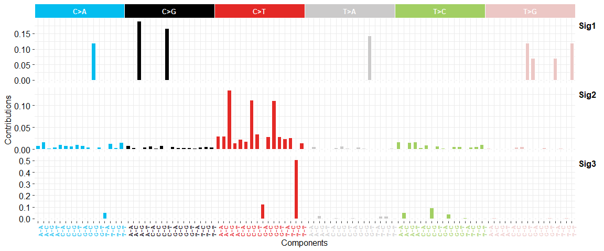
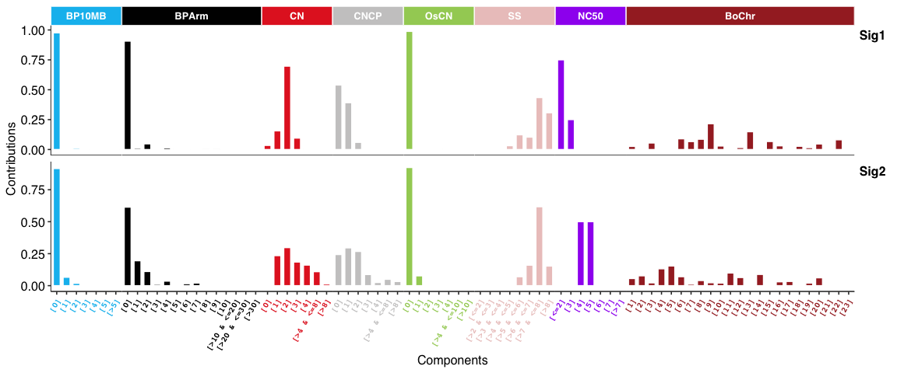
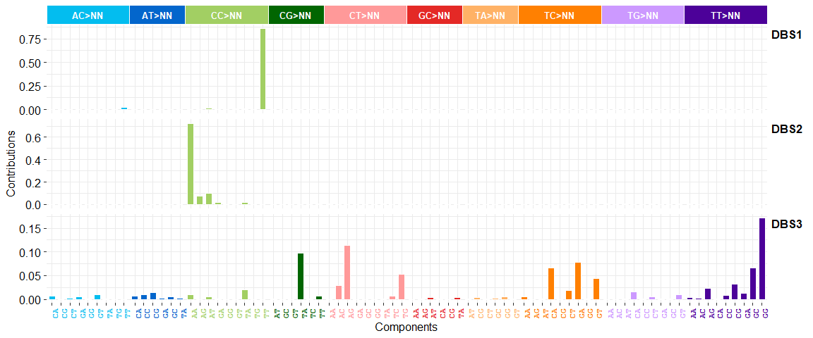
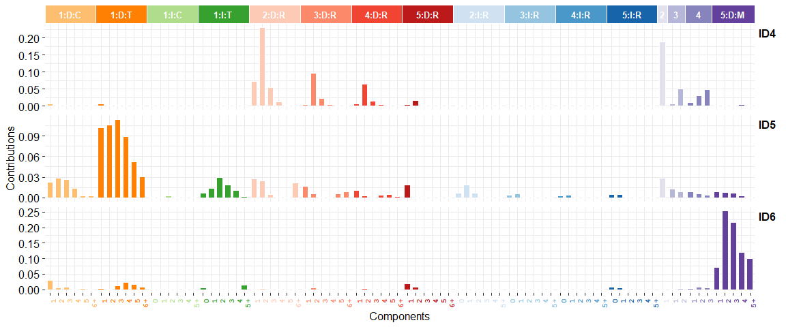
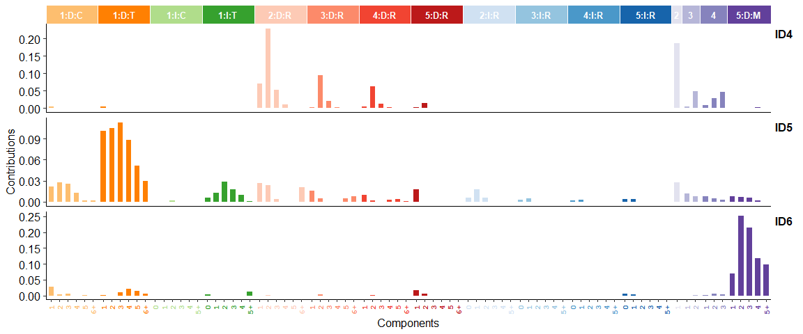

Overview
The cancer genome is shaped by various mutational processes over its lifetime, stemming from exogenous and cell-intrinsic DNA damage, and error-prone DNA replication, leaving behind characteristic mutational spectra, termed mutational signatures. This package, sigminer, helps users to extract, analyze and visualize signatures from genome alteration records, thus providing new insight into cancer study.
For pipeline tool, please see its co-evolutionary CLI sigflow.
SBS signatures:

Copy number signatures:

DBS signatures:

INDEL (i.e. ID) signatures:

Genome rearrangement signatures:

sig_tally()for RS is not supported.
Features
- supports a standard de novo pipeline for identification of 5 types of signatures: copy number, SBS, DBS, INDEL and RS (genome rearrangement signature).
- supports quantify exposure for one sample based on known signatures.
- supports two methods for calling copy number signatures: one is from Macintyre et al. 2018 and the other is created by our group.
- supports association and group analysis and visualization for signatures.
- supports two types of signature exposures: relative exposure (relative contribution of signatures in each sample) and absolute exposure (estimated variation records of signatures in each sample).
- supports basic summary and visualization for profile of mutation (powered by maftools) and copy number.
- supports parallel computation by R packages foreach, future and NMF.
- efficient code powered by R packages data.table and tidyverse.
- elegant plots powered by R packages ggplot2, ggpubr, cowplot and patchwork.
- well tested by R package testthat and documented by R package roxygen2, roxytest, pkgdown, and etc. for both reliable and reproducible research.
Key Interfaces and Their Performances
Sigminer provides many approaches to extract mutational signatures. To test their performances, I use 4 mutation catalog datasets (each mutation catalog dataset is composed of 30 samples, 10 COSMIC v2 (SBS) signatures are randomly assigned to each sample with random signature exposure) from reference #6. The following table shows how many signatures can be recovered and the corresponding average cosine similarity to COSMIC reference signatures for each approach with settings.
| Approach | Selection Way | Setting | Caller | Recommend | Driver | Set1 | Set2 | Set3 | Set4 | Success /Mean | Run time | Note |
|---|---|---|---|---|---|---|---|---|---|---|---|---|
| Standard NMF | Manual | Default. 50 runs (estimation) + 100 runs (extraction) |
sig_estimate, sig_extract
|
YES ⭐⭐⭐ | R | 10 (0.884) | 10 (0.944) | 9 or 10 (0.998) | 10 (0.994) | ~90%/0.955 | ~1min (8 cores) | This is a basic method, suitable for good mutation data with enough mutations. |
| SigProfiler | Manual/Automatic | Default. 100 runs | sigprofiler_extract |
YES ⭐⭐⭐⭐ | Python/Anaconda | 10 (0.961) | 10 (0.999) | 10 (0.990) | 10 (0.997) | 100%/0.987 | ~1h (8 cores) | A golden standard like approach in this field, but longer run time, and the requirement for Python environment and extra large packages reduce its popularity here. |
| Best Practice | Manual/Automatic | Use bootstrapped catalog (1000 runs) | bp_extract_signatures |
YES ⭐⭐⭐⭐⭐ | R | 10 (0.973) | 10 (0.990) | 10 (0.992) | 10 (0.971) | 100%/0.981 | ~10min (8 cores) | My R implementation for methods from reference #5 and #6. Should be the best option here. |
| Best Practice | Manual/Automatic | Use original catalog (1000 runs) | bp_extract_signatures |
NO ⭐ | R | 10 (0.987) | 9 (0.985) | 10 (0.997) | 9 (0.987) | 50%/0.989 | ~10min (8 cores) | This is created to compare with the approach with bootstrapped catalogs above and the standard NMF way. |
| Bayesian NMF | Automatic | L1KL+optimal (20 runs) | sig_auto_extract |
YES ⭐⭐⭐ | R | 10 (0.994) | 9 (0.997) | 9 (0.998) | 9 (0.999) | 25%/0.997 | ~10min (8 cores) | The Bayesian NMF approach auto reduce the signature number to a proper value from a initial signature number, here is 20. |
| Bayesian NMF | Automatic | L1KL+stable (20 runs) | sig_auto_extract |
YES ⭐⭐⭐⭐ | R | 10 (0.994) | 9 (0.997) | 10 (0.988) | 9 (0.999) | 50%/0.995 | ~10min (8 cores) | See above. |
| Bayesian NMF | Automatic | L2KL+optimal (20 runs) | sig_auto_extract |
NO ⭐ | R | 12 (0.990) | 13 (0.988) | 12 (0.902) | 12 (0.994) | 0%/0.969 | ~10min (8 cores) | See above. |
| Bayesian NMF | Automatic | L2KL+stable (20 runs) | sig_auto_extract |
NO ⭐ | R | 12 (0.990) | 12 (0.988) | 12 (0.902) | 12 (0.994) | 0%/0.969 | ~10min (8 cores) | See above. |
| Bayesian NMF | Automatic | L1WL2H+optimal (20 runs) | sig_auto_extract |
YES ⭐⭐⭐ | R | 9 (0.989) | 9 (0.999) | 9 (0.996) | 9 (1.000) | 0%/0.996 | ~10min (8 cores) | See above. |
| Bayesian NMF | Automatic | L1WL2H+stable (20 runs) | sig_auto_extract |
YES ⭐⭐⭐⭐ | R | 9 (0.989) | 9 (0.999) | 9 (0.996) | 9 (1.000) | 0%/0.996 | ~10min (8 cores) | See above. |
NOTE: although Bayesian NMF approach with L1KL or L1WL2H prior cannot recover all 10 signatures here, but it is close to the true answer from initial signature number 20 in a automatic way, and the result signatures are highly similar to reference signatures. This also reminds us that we could not use this method to find signatures with small contributions in tumors.
Installation
You can install the stable release of sigminer from CRAN with:
install.packages("sigminer", dependencies = TRUE) # Or BiocManager::install("sigminer", dependencies = TRUE)
You can install the development version of sigminer from Github with:
remotes::install_github("ShixiangWang/sigminer", dependencies = TRUE) # For Chinese users, run remotes::install_git("https://gitee.com/ShixiangWang/sigminer", dependencies = TRUE)
Usage
A complete documentation of sigminer can be read online at https://shixiangwang.github.io/sigminer-doc/ (For Chinese users, you can also read it at https://shixiangwang.gitee.io/sigminer-doc/). All functions are well organized and documented at https://shixiangwang.github.io/sigminer/reference/index.html (For Chinese users, you can also read it at https://shixiangwang.gitee.io/sigminer/reference/index.html). For usage of a specific function fun, run ?fun in your R console to see its documentation.
Citation
If you use sigminer in academic field, please cite one of the following papers.
Wang, Shixiang, et al. “Copy number signature analyses in prostate cancer reveal distinct etiologies and clinical outcomes” medRxiv (2020) https://www.medrxiv.org/content/10.1101/2020.04.27.20082404v1
Shixiang Wang, Ziyu Tao, Tao Wu, Xue-Song Liu, Sigflow: An Automated And Comprehensive Pipeline For Cancer Genome Mutational Signature Analysis, Bioinformatics, btaa895, https://doi.org/10.1093/bioinformatics/btaa895
References
Please properly cite the following references when you are using any corresponding features. The references are also listed in the function documentation. Very thanks to the works, sigminer cannot be created without the giants.
- Mayakonda, Anand, et al. “Maftools: efficient and comprehensive analysis of somatic variants in cancer.” Genome research 28.11 (2018): 1747-1756.
- Gaujoux, Renaud, and Cathal Seoighe. “A Flexible R Package for Nonnegative Matrix Factorization.”" BMC Bioinformatics 11, no. 1 (December 2010).
- H. Wickham. ggplot2: Elegant Graphics for Data Analysis. Springer-Verlag New York, 2016.
- Kim, Jaegil, et al. “Somatic ERCC2 mutations are associated with a distinct genomic signature in urothelial tumors.” Nature genetics 48.6 (2016): 600.
- Alexandrov, Ludmil B., et al. “Deciphering signatures of mutational processes operative in human cancer.” Cell reports 3.1 (2013): 246-259.
- Degasperi, Andrea, et al. “A practical framework and online tool for mutational signature analyses show intertissue variation and driver dependencies.” Nature cancer 1.2 (2020): 249-263.
- Alexandrov, Ludmil B., et al. “The repertoire of mutational signatures in human cancer.” Nature 578.7793 (2020): 94-101.
- Macintyre, Geoff, et al. “Copy number signatures and mutational processes in ovarian carcinoma.” Nature genetics 50.9 (2018): 1262.
- Tan, Vincent YF, and Cédric Févotte. “Automatic relevance determination in nonnegative matrix factorization with the/spl beta/-divergence.” IEEE Transactions on Pattern Analysis and Machine Intelligence 35.7 (2012): 1592-1605.
- Bergstrom EN, Huang MN, Mahto U, Barnes M, Stratton MR, Rozen SG, Alexandrov LB: SigProfilerMatrixGenerator: a tool for visualizing and exploring patterns of small mutational events. BMC Genomics 2019, 20:685 https://bmcgenomics.biomedcentral.com/articles/10.1186/s12864-019-6041-2
LICENSE
The software is made available for non commercial research purposes only under the MIT. However, notwithstanding any provision of the MIT License, the software currently may not be used for commercial purposes without explicit written permission after contacting Shixiang Wang wangshx@shanghaitech.edu.cn or Xue-Song Liu liuxs@shanghaitech.edu.cn.
MIT © 2019-Present Shixiang Wang, Xue-Song Liu
MIT © 2018 Geoffrey Macintyre
MIT © 2018 Anand Mayakonda
Cancer Biology Group @ShanghaiTech
Research group led by Xue-Song Liu in ShanghaiTech University